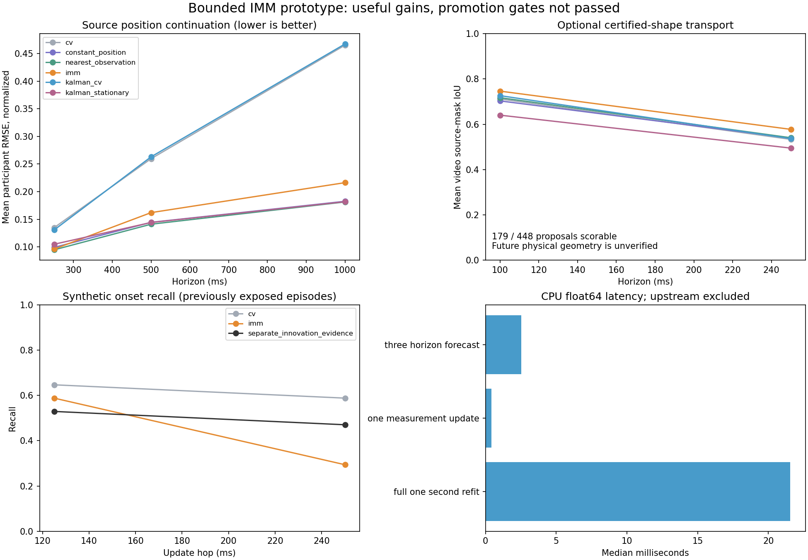

The IMM improves CV forecasts and supported geometry transport, but does not beat the strongest simple position baseline. All 1,271 valid input histories were retained. Two repeatedly used validation participants provide exploratory evidence.

Mean participant RMSE in intrinsic-normalized coordinates. Lower is better.
| Method | 250 ms | 500 ms | 1 second |
|---|---|---|---|
| cv | 0.13484 | 0.25960 | 0.46500 |
| constant_position | 0.09912 | 0.14448 | 0.18252 |
| nearest_observation | 0.09471 | 0.14108 | 0.18135 |
| imm | 0.09608 | 0.16204 | 0.21626 |
| kalman_cv | 0.13064 | 0.26299 | 0.46716 |
| kalman_stationary | 0.10481 | 0.14418 | 0.18180 |
Training-only 12-setting IMM selection; Joseph covariance updates; single-filter ablations; explicit missing-geometry ledgers; synthetic event and continuation stress; inference and memory measurements. No learned physical shape dynamics or independent contact/identity certification.
Geometry scores cover 179 of 448 proposals. The certificate belongs to the historical canonical shape, preserved under positive-scale translation—not the future real object. Event evidence remains a separate channel.
CPU median: 0.44 ms per measurement update; 2.52 ms for three forecast horizons; 21.54 ms for the full one-second refit used in this experiment. Incremental updates do not reproduce a reset-window fit. Upstream encoding is excluded.
Plan mapping and limitations · Detailed results · Acceptance gates · Training selection · All geometry opportunities · Event diagnostics · Conditional uncertainty · Numerical audit